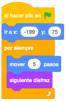
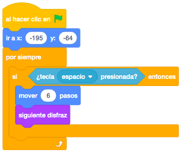

Cogeremos tres personajes de la biblioteca de objetos de Scratch para hacer que compitan en una carrera de velocidad.
Elegiremos el fondo que más nos guste de la biblioteca y dibujaremos una línea de salida y otra línea de
meta. La línea de meta tiene que ser de un color determinado que no aparezca en el fondo, ya que tendremos
en cuenta el color en la programación.
También podemos dibujar nosotros el fondo como en nuestro caso.

El juego consiste en que habrá dos personajes que corran automáticamente desde la salida hasta la meta y el
otro de los personajes lo manejaremos nosotros mediante el teclado.
Posicionaremos a los tres personajes en la parte de la izquierda junto a la salida.

Haremos que los dos primeros se muevan solos a velocidades distintas. En nuestro caso hemos puesto que uno avance de 3 en 3 pasos y el otro de 5 en 5. Añadiremos que vaya cambiando de disfraz para que parezca que corren.

El personaje que moveremos nosotros se moverá cuando le demos a la tecla del espacio. Para controlar la tecla que pulsamos, utilizaremos el bloque "¿Tecla Espacio Presionada?". Moveremos nuestro personaje un paso más rápido que el personaje más rápido.

Ahora que los personajes ya se mueven, añadiremos que cuando cualquiera de ellos toque la línea, en nuestro
caso amarilla, haga un sonido y diga alguna cosa.
Para controlar el color utilizaremos el bloque "¿Tocando el Color?" y para mostrar algo que dicen los objetos
el bloque "Decir Durante Segundos".
El mensaje lo diremos durante unos segundos y cuando termine pararemos el juego con "Detener Todos".

Y el juego quedaría así.

Para ver el juego terminado pulsa
aquí.
Para descargarte el juego terminado pulsa
aquí.